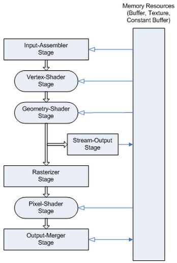

COMP 2501 - Winter 2014 Tutorial #6
Graphics Pipeline
Description:
The purpose of this tutorial is to familiarize yourself with lighting DirectX Graphics Pipeline.
To get credit for the tutorial you must complete, or make significant progress, on the problems provided and demonstrate your results to the tutorial TA.
If you cannot complete the tutorial in the time allotted you may demonstrate the completed results to the TA during their office hours.
These tutorials are based on the Rastertek set of tutorials.
Instructions:
Overview
In this tutorial we're going to address something that we've glossed over in the past, and that is the graphics pipeline.

This is an image of the DirectX11 graphics pipeline, taken from the Microsoft Dev Center site.
Essentially the data flow is as follows:
In this tutorial we will be covering three types of lighting that you can use in your games. The types are as follows, in escalating order of complexity: ambient, diffuse and specular.
Before we go over how the lighting itself works